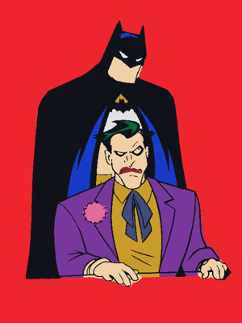

Üç özgün taslak. Uygulanan yön A: daha az yüzey, sakin bölüm başlığı, eseri çevreleyen boşluk ve aynı duvarda devam eden bir kamera.

Basılı tut, simi akıt.
Bırakınca durur.
A / Sakin stüdyo Uygulandı
Serif isim · küçük ilerleme · çizgi ikonlar
Sergide kum rengi duvar ve bol çerçeve aralığı.
BİR PARILTI KOLEKSİYONU
01 — Gotham
B / Müze bileti
Eser numarası · dikey künye · grafik düzen
Daha editoryal, fakat oyun sırasında fazla etiket var.
↗ ⠿ ▰ ∪
Basılı tut ve bırak
C / Alet çekmecesi
Bir arada araçlar · dokunsal çekmece
Fırça modunda anlaşılır; basılı akışta gereksiz yer tüketiyor.